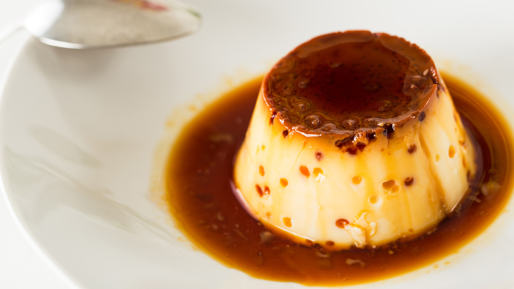

Flan de Huevo

"Hubo un tiempo en que el flan de huevo era el rey de las cartas de postre de (casi) todos los restaurantes del país, con su variante de flan de café. Rematar una comida con un flan con nata era de lo más chic. Pero llegaron otros postres como las tartas de queso, el suculento brownie o el tiramisú, le ganaron terreno y el flan cayó en el olvido"
Ingredientes:
Para 8 unidades
- 500ml de leche entera
- 125g de azúcar
- 3 huevos "M"
- Piel de limón o naranja
- Canela en rama
Preparación:
- Calentamos la leche con la piel de limón y la canela en rama. Cuando arranque a hervir la retiramos del fuego y dejamos que infusione al tiempo que enfría durante 30 minutos.
- Mezclamos los huevos con el azúcar, removiendo con suavidad y sin batir. Incorporamos la leche y removemos suavemente hasta que el azúcar se haya disuelto. Pasamos la mezcla por un colador fino.
- Cubrimos la base de las flaneras con una fina capa de caramelo líquido. Las rellenamos con la mezcla, con cuidado y lentamente para no incorporar aire, y las colocamos en una fuente de horno. Llenamos la fuente con un dedo de agua y la introducimos en el horno, precalentado con calor arriba y abajo, a 180 ºC.
- Cocemos durante 25-30 minutos o hasta que, al introducir una aguja en el flan, esta salga seca. Retiramos los moldes del horno. Esperamos a que se atemperen antes de pasarlos a la nevera y dejar que reposen durante 24 horas.
Información nutricional:
Valores medios por 100g
- Valor energético:
- - 604Kj / 143kcal
- Grasas:
- - 3.9 g
- Hidratos de carbono:
- - 22.3 g
- Proteínas:
- - 4.6 g
- Sal:
- - 0.09 g